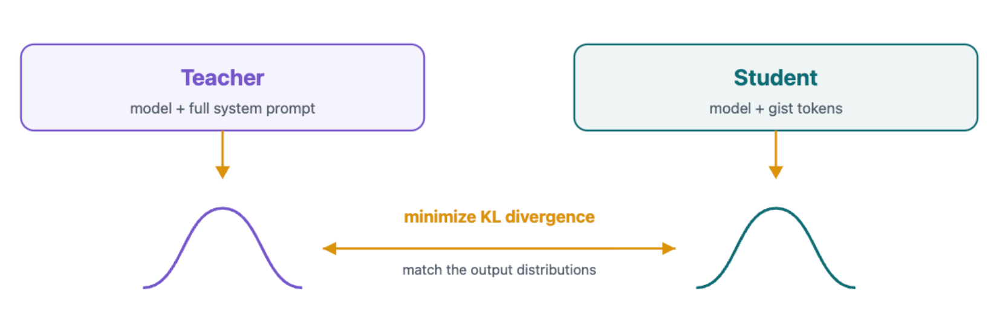
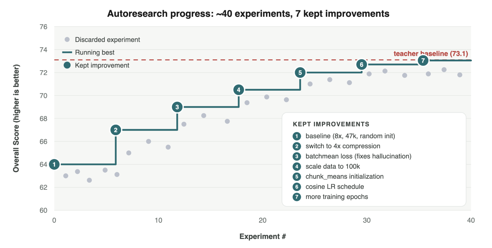
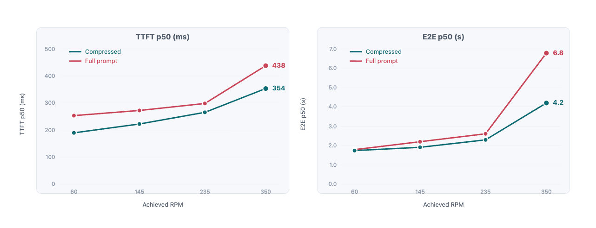

Gisting把上下文压缩成一组学习到的token，在保留质量的同时让模型更快更便宜。
System prompts每个请求可以占数千token。更长的prompt意味着更慢、更贵的推理。这导致在专用硬件上服务模型时，为容纳同样流量需要更多GPU。
我们对gisting的实现（最初由Wingate, Shoeybi和Sorensen在《Prompt Compression and Contrastive Conditioning for Controllability and Toxicity Reduction in Language Models》中提出）让我们能以短prompt的成本获得长prompt的行为优势。
通过gisting，我们把Sidekick GraphQL agent的system prompt从约6,000 token砍到约1,500 gist token（4:1压缩），且不损失预测质量。我们通过知识蒸馏学习一组特殊token的嵌入，推理时用它们替换system prompt来实现这一点。
把system prompt 4:1压缩成gist token带来的服务增益显著。在350 RPM下，median time to first token（TTFT）从438ms降到354ms，median端到端请求延迟从6.8s降到4.2s，吞吐从20.2升到23.4 queries per second（QPS）。这些增益让我们能为GraphQL agent的流量减少分配的GPU数。
gist token是我们加入模型词表的特殊token。我们训练嵌入序列，使它们替换进上下文后诱导模型表现得像看过了完整prompt。在4:1压缩下，每四个prompt token加一个gist token。我们冻结模型权重，只训练gist嵌入。
我们通过知识蒸馏学习gist嵌入。对每条轨迹跑两次前向。teacher pass中模型看到完整自然语言prompt，为模型响应中每个位置导出teacher logits。student pass中我们把完整prompt换成gist tokens，再跑同一模型，导出对应每个teacher响应位置的student logits。

我们用teacher logits和student logits之间的KL散度训练gist嵌入，直到student的预测紧密匹配teacher。
训练结束时，我们把gist嵌入直接写进模型的embedding矩阵，并把新gist token注册为模型tokenizer的特殊token。模型像任何其他模型一样在推理时加载和运行：没有自定义attention mask、额外encoder或特殊服务路径。
唯一的推理时变化在请求侧：把prompt换成gist token字符串。压缩的全部成本只在训练时付一次。
Gisting和prefix caching的优势并不互斥。所有现代服务引擎维护KV cache，存储先前见过的序列的keys和values。当新请求包含缓存中存在的序列（通常包括system prompt）时，该序列的KV tensors被取回而非重算。
虽然prefix caching强大，但它不消除decode成本。模型每生成一个token，该token就attend序列中的每个key，无论是否缓存。因为decode受内存带宽约束，每个生成的token必须从高带宽内存流式读整个KV cache，而那个读取随缓存序列长度线性增长。
Gisting减少attention计算和KV cache读取的成本，后者在batch变大时对吞吐尤其有影响。
Gisting和prefix caching的优化叠加，我们在实验和生产服务栈中两者都用。
为调优超参数，我们把一个autoresearch loop指向trainer。它提出配方、训练gist嵌入、评估结果模型、重复。

在autoresearch循环中，三个优化尤其影响大：
初始化：不用随机噪声初始化嵌入，而是把system prompt拆成k长度的序列（k由k:1压缩比导出），用第n个system prompt chunk的均值初始化第n个gist嵌入。这个优化把初始loss降了一个因子7。
压缩：试验一系列压缩比后，我们找到预测质量开始下降的比值（对我们的领域复杂度，4:1是最优比；其他领域不同）。
数据量和多样性：策展大规模多样化数据集补上剩余缺口。
除了精简超参数调优，autoresearch还帮我们在训练基础设施中实现几个关键优化。第一个是我们如何归一化loss：按每响应token平均会让模型幻觉，而按batch平均保留长响应的更多信号、产生稳定嵌入。第二个是速度：预计算teacher logits和预tokenize数据把一次完整运行从三十小时砍到六小时。
我们跑了对照同一模型压缩prompt与完整prompt的负载测试。

Gisting相对完整prompt带来显著延迟增益，且随请求并发上升、batch变大，差距更明显。在350 RPM下，TTFT降19%，E2E延迟降约38%，吞吐升16%。
实践中，那16% 的吞吐增益直接转化为我们生产工作负载的GPU节省。用服务GraphQL流量的硬件配置，我们能用gisting少用14% 的GPU。
Gisting也很好融入Shopify的持续学习循环。一旦我们有了一个模型的蒸馏gist嵌入，就可以把这个模型当作持续学习的新起点。我们可以用gist嵌入作为前缀做后训练，把梯度更新同时应用到模型权重和gist嵌入。
通过在增量数据上同时优化权重和gist嵌入，我们可以持续校准和改进模型，而无需每次都从头蒸馏gist嵌入的计算负载。
长system prompts有用但贵。Gisting让agent用一小部分token利用广泛指令的所有优势，降低延迟和GPU开销。
在GPU需求超过供给的近期时代，每个推理优化都重要，但我们也拒绝在质量上妥协。Gisting两者都给，在Shopify它是新标准。
参考：https://shopify.engineering/gisting